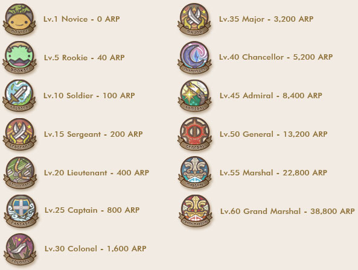

| |
| |
Reputation Point หรือ RP เป็นค่าคะแนนที่ผู้เล่นจะได้รับจากการทำ Mission หรือชนะการแข่งขัน PVP ต่างๆ ซึ่งผู้เล่นจะสามารถนำค่านี้ไปแลก
ของต่างๆ มาใช้ได้
Total Reputation Point หรือ TRP คือ ค่าคะแนนรวมของ RP ทั้งหมดที่ผู้เล่นเคยได้รับ และจะเป็นค่าที่ใช้กำหนด Rank หรือตำแหน่งของผู้เล่น
ต่างๆ ซึ่งจะสามารถทำให้สามารถซื้อของต่างๆ ภายในเมืองได้และสามารถใช้ equipment พิเศษได้ค่านี้จะลดลงเองโดยอัตโนมัติทุกอาทิตย์ 10%
ในขณะที่ตำแหน่งที่เคยได้แล้วนั้นจะไม่ลดลง
Rank ต่างๆ ตามค่า TRP |
|  |
|